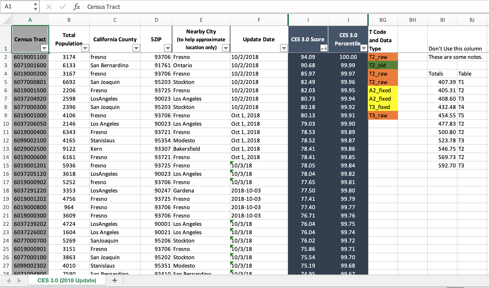
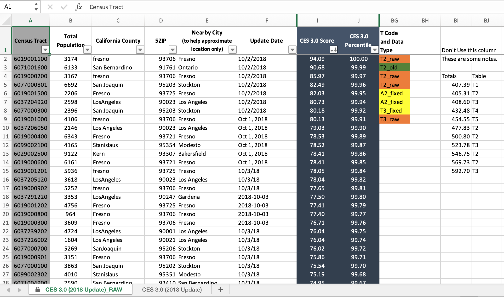
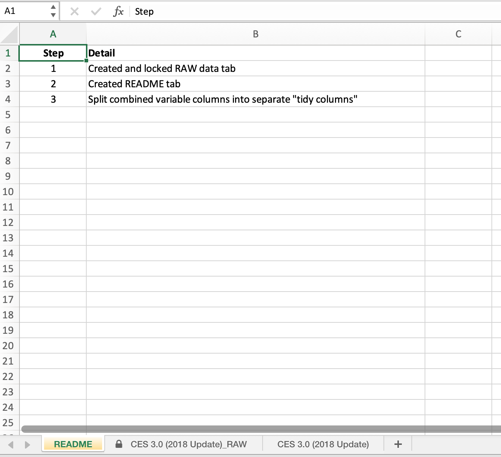
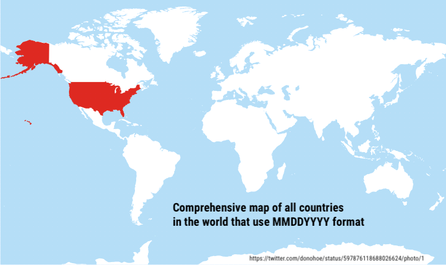

Learning objectives
- Understand what messy data is and how to avoid it
- Understand how to effectively use spreadsheets
- Learn the difference between wide and long data, and how to pivot between wide and long formats
Spreadsheets
Spreadsheets have been woven into nearly every facet and field, and although they are meant to make our lives easier, it is typical to spend lots of time untangling the data [mis]adventures they create.
However, a few simple tips on how to structure and use spreadsheets can make all the difference. There will still always be messy datasets to face, but learning how to more effectively use spreadsheets will make life easier and more reproducible, and hopefully make these encounters less daunting.
Let’s go over what tidy data should look like, how to wrangle a messy real-life spreadsheet, and how to understand the difference between human readable and computer readable information.
What is Tidy Data?
Ultimately spreadsheets (or any list or table of data) attempt to take human readable data and turn it into computer readable data. The problem is humans often like to add information that is only human readable (i.e., colors in spreadsheet). These bits of “flair” may be nice to visualize things, but computers can only interpret the literal pieces of data in each cell of a spreadsheet, so if we want additional information to be converted (like color, or what it represents), we need to store that information in a computer readable context.
Typically when we look at data, we want it to be in a “tidy” format. Data in a tidy format, means that each column is a unique variable, and each row is a unique observation of data. Furthermore, any information we want the computer to retain should be stored as variables and not in side comments or coloring. This makes it possible for a computer to easily interpret these data, and avoids any unnecessary conversions or loss of data.

Figure 1: Illustrations from the Openscapes blog Tidy Data for reproducibility, efficiency, and collaboration by Julia Lowndes and Allison Horst
Dealing with Messy Data
In reality, we will generally encounter non-tidy data in the wild. Messy data comes in many forms and it exists everywhere. Much of data science hinges on cleaning up and reformatting data so it can be used in some way other than the form it exists in. The good news is the concept of tidy data can be applied to any dataset, and there are some very straightforward tips to make this easy to implement!

Figure 2: Illustrations from the Openscapes blog Tidy Data for reproducibility, efficiency, and collaboration by Julia Lowndes and Allison Horst
Same Tools, Different Data
The great news is we can use a similar set of tools to deal with tidying and cleaning our data, and once we’ve learned these tools, there are few datasets that will stand in your way (though some may take longer than others!). An important thing to learn is that tidy data starts the moment we begin recording information. The more we can collect and update data in a “tidy” fashion, the less cleaning and wrangling is required to work with that data.

Figure 3: Illustrations from the Openscapes blog Tidy Data for reproducibility, efficiency, and collaboration by Julia Lowndes and Allison Horst
Understanding Messy Spreadsheets
An important step towards tidy data is learning to quickly spot where data is messy and what needs to be fixed.
Let’s take a look at this messy spreadsheet data which is based on data from the Calenviroscreen data from previous modules.

CHALLENGE 1
- What issues do you notice about this spreadsheet?
- What could we do to make this tidy?
Click for Answers!
Multiple tables on one sheet
Multiple variables in a single column (see
T Code and Data Type)Tables start on different rows
Different date formats
Different county spellings (see
California County)Color encoding
Extra Practice
If you are interested in an excellent lesson on how to improve your spreadsheet skills, checkout the excellent lesson via Data Carpentry: Data Organization in Spreadsheets for Ecologists. This lesson should be read by anyone and everyone who uses spreadsheets (which is everyone), so go take a look!
Spreadsheet Best Practices
If you have to work with a multi-tabbed spreadsheet (which we all do at some point), there are some basic rules/tips that can save you and anyone else that needs to work with the same spreadsheet. We also recommend checking out White et al. 20131 and Broman and Woo 20182.
Keep Raw Data RAW
Any raw data you have should always stay raw so you can always go back and “reproduce” your analysis. The danger with spreadsheets is its easy to change things with a few clicks and overwrite the raw data, and have no record of what you did.
So no matter what shape the data is in, it’s always advisable to make a copy of the tab with the data, append or prepend “RAW” to the tab name, and lock the tab so the data can’t be deleted or altered. To do this:
- right click on the tab and select
Move or Copy - check
Create a Copybox - right click on the newly copied tab and select
Renameand addRAW - right click on the
RAWtab again, and selectProtect Sheet - the only two boxes that should be checked are
Select locked cellsandSelect unlocked cells. ClickOKand save!

Record what you did with README tab
While programming languages like R allow us to write scripts or code that record every step of the process, spreadsheet programs use an interface based on points and clicks. It’s easy to forget what we clicked on or what we did as we begin to clean/work with our data. An easy solution which your future self (or future collaborators) will thank you for is adding a README tab! This is where you can write notes about what things have been done to the data, ideally with sufficient information that future you or someone else would be able to reproduce your analysis or cleaned dataset by reading the README.

Date Standards
Perhaps one of the most frustrating and frequent data snafus you may encounter is how dates or datetimes get formatted. An entire lesson could be devoted to dealing with datetime data, but we can simplify it to one rule: keep dates formatted using the world standard3 of YYYY-MM-DD. Better yet, in spreadsheets, split the date into unique columns for Year, Month, and Day. It’s straightforward to paste these back together and format them in R, and because they are then stored as simple integer values there will be no missed translations between people or computers.

Keep one table per tab
With spreadsheets, it is tempting to add additional summary tables in the same tab you may be working in, or paste another table into the sheet your are working so you can calculate something using a formula. When these data need to be read in by another program (e.g., R), a computer program cannot interpret the visual space our eyes may see between tables as an indication that these tables are separate. Computers are literal, and thus every sheet or tab will always be interpreted as one table by the computer. Follow tidy data principles and keep one table for every sheet. It makes import and export simpler, and in reality tabs are cheap (as are columns). When in doubt, keep things separate and clearly delineated in a way that is both computer readable and human readable. This includes figures…resist the temptation to include figures in a spreadsheet with a table. Keep them separate!
Don’t Merge or Color Data
Please don’t merge cells. Just don’t. It creates many issues that are outlined above, and generally requires significant data wrangling to “untangle” merged data. Merging cells is generally reserved for creating a final table in a word document for display purposes only.
And while using colors can be fun, remember these data are only human readable. Add a new column variable to encode these data. It’s rare that you will run out of space for new columns or rows, but common that data encoded visually will be forgotten or misinterpreted.
Missing Data or NA
Remember, computers are literal, thus any blank cell will be interpreted as missing data or NA by the computer. Use this to your advantage! It’s preferable to have consistent designation of NA (i.e., blank cells) instead of using things like "No data" or -999. These are common ways to encode missing values, but they introduce different problems when trying to analyze or filter the data later. Using a character string like "No data" may unintentionally convert all the data to a character class when imported into R when it is actually numeric or integer (see module on data structures). If using a numeric value for NA like -999, the computer will interpret these as numbers, and it may be easy to miss or include these data in downstream analyses.
Although there is a potential risk to accidentally add a space in a blank cell, the simple and easiest approach for missing or NA data is to leave cells blank. This is generally and consistently interpreted as a missing value by computer programming languages and avoids the need to remember which code was used to signify NA. This also means that a 0 is a 0. Any data that is 0 should be encoded as such, and not left blank.
Pivoting
When we enter data in a spreadsheet, the data is typically oriented in a wide format. This makes entry easier and is generally easier for us to see, enter, and explore the data. Although wide data is more human-friendly for data entry, long data is much better for analysis and visualization. In particular, in R, the {ggplot} package prefers data in a long format, which facilitates easier filtering, grouping, and faceting of the data.
Wide to Long
Let’s use the ces3results.xlsx CalEnviroscreen data, which we can read in and look at the column names and data types. By default, read_xlsx() reads in the first sheet. See the import and export module for more details.
tibble[,57] [8,035 × 57] (S3: tbl_df/tbl/data.frame)
$ Census Tract : num [1:8035] 6019001100 6071001600 6019000200 6077000801 6019001500 ...
$ Total Population : num [1:8035] 3174 6133 3167 6692 2206 ...
$ California County : chr [1:8035] "Fresno" "San Bernardino" "Fresno" "San Joaquin" ...
$ ZIP : num [1:8035] 93706 91761 93706 95203 93725 ...
$ Nearby City
(to help approximate location only): chr [1:8035] "Fresno" "Ontario" "Fresno" "Stockton" ...
$ Longitude : num [1:8035] -120 -118 -120 -121 -120 ...
$ Latitude : num [1:8035] 36.7 34.1 36.7 37.9 36.7 ...
$ CES 3.0 Score : num [1:8035] 94.1 90.7 86 82.5 82 ...
$ CES 3.0 Percentile : num [1:8035] 100 100 100 100 99.9 ...
$ CES 3.0
Percentile Range : chr [1:8035] "95-100% (highest scores)" "95-100% (highest scores)" "95-100% (highest scores)" "95-100% (highest scores)" ...
$ SB 535 Disadvantaged Community : chr [1:8035] "Yes" "Yes" "Yes" "Yes" ...
$ Ozone : num [1:8035] 0.0649 0.0622 0.0622 0.0462 0.0649 ...
$ Ozone Pctl : num [1:8035] 98.2 91.1 91.1 53 98.2 ...
$ PM2.5 : num [1:8035] 15.4 13.3 15.4 12.5 15.4 ...
$ PM2.5 Pctl : num [1:8035] 97.2 93.6 97.2 84 97.2 ...
$ Diesel PM : num [1:8035] 48.5 38.6 47.4 24.1 18.8 ...
$ Diesel PM Pctl : num [1:8035] 95.5 92.1 95.4 73.5 58.2 ...
$ Drinking Water : num [1:8035] 681 905 681 279 1000 ...
$ Drinking Water Pctl : num [1:8035] 80.9 96.1 80.9 29.1 98.6 ...
$ Pesticides : num [1:8035] 2.75 1.37 3.03 12.93 3518.41 ...
$ Pesticides Pctl : num [1:8035] 47.8 41.3 48.8 60.6 95.2 ...
$ Tox. Release : num [1:8035] 18552 7494 12455 2388 21791 ...
$ Tox. Release Pctl : num [1:8035] 97.5 89 95.4 70 98.2 ...
$ Traffic : chr [1:8035] "909.14" "782.26" "576.52" "1305.01" ...
$ Traffic Pctl : chr [1:8035] "62.977816769018702" "55.658603835067098" "39.002381250783301" "78.293019175335303" ...
$ Cleanup Sites : num [1:8035] 80.5 66.2 22 50.1 60 ...
$ Cleanup Sites Pctl : num [1:8035] 98.7 97.7 85.1 96.1 97.2 ...
$ Groundwater Threats : num [1:8035] 45.8 36 30.2 132.1 54.2 ...
$ Groundwater Threats Pctl : num [1:8035] 89.9 85.6 81.9 98.4 92.1 ...
$ Haz. Waste : num [1:8035] 0.795 1.25 0.2 0.795 13.1 ...
$ Haz. Waste Pctl : num [1:8035] 84.3 88.8 60.5 84.3 99.7 ...
$ Imp. Water Bodies : num [1:8035] 0 5 0 19 0 7 14 0 7 0 ...
$ Imp. Water Bodies Pctl : num [1:8035] 0 55 0 98.6 0 ...
$ Solid Waste : num [1:8035] 21.8 12 2.5 27 50.8 ...
$ Solid Waste Pctl : num [1:8035] 97.8 92.2 57.2 99.1 99.9 ...
$ Pollution Burden : num [1:8035] 80 81.2 71.2 74.5 80.2 ...
$ Pollution Burden Score : num [1:8035] 9.85 10 8.76 9.17 9.88 ...
$ Pollution Burden Pctl : num [1:8035] 100 100 99 99.6 100 ...
$ Asthma : num [1:8035] 131.6 60.7 142.1 142.2 90.5 ...
$ Asthma Pctl : num [1:8035] 97.7 69.8 98.3 98.3 89.5 ...
$ Low Birth Weight : chr [1:8035] "7.44" "7.04" "10.16" "6.23" ...
$ Low Birth Weight Pctl : chr [1:8035] "93.835704216327102" "90.849673202614397" "99.7821350762527" "80.648468537741905" ...
$ Cardiovascular Disease : num [1:8035] 14.1 12.9 15 14.7 12.8 ...
$ Cardiovascular Disease Pctl : num [1:8035] 96.3 92.7 97.7 97.2 92.4 ...
$ Education : chr [1:8035] "53.3" "53.3" "42.3" "40.799999999999997" ...
$ Education Pctl : chr [1:8035] "95.760787282361804" "95.760787282361804" "89.061317183951502" "87.522079232904403" ...
$ Linguistic Isolation : chr [1:8035] "16.2" "33.4" "16.7" "15.3" ...
$ Linguistic Isolation Pctl : chr [1:8035] "77.509665377949602" "96.253832822290406" "78.389548060258605" "75.136648446873707" ...
$ Poverty : num [1:8035] 76.3 72.5 86.8 61.3 66.4 66.4 76.2 74.5 75.7 83.4 ...
$ Poverty Pctl : num [1:8035] 97.1 94.6 99.6 85.6 90.2 ...
$ Unemployment : chr [1:8035] "17.600000000000001" "12.3" "16.100000000000001" "19.600000000000001" ...
$ Unemployment Pctl : chr [1:8035] "91.724838177433696" "71.823835512120795" "87.980708211701995" "94.973981469729694" ...
$ Housing Burden : chr [1:8035] "26" "34.1" "40.1" "21.1" ...
$ Housing Burden Pctl : chr [1:8035] "79.398324447829395" "93.754760091393706" "97.854785478547896" "63.544046712363503" ...
$ Pop. Char. : num [1:8035] 92.1 87.4 94.6 86.7 80.1 ...
$ Pop. Char. Score : num [1:8035] 9.55 9.07 9.81 8.99 8.3 ...
$ Pop. Char. Pctl : num [1:8035] 99.7 98.1 100 97.7 92.8 ...Note the different data classes (num, chr, etc). Even though all columns between Ozone and Pop. Char. Pctl should be numeric, there are a number of “chr” or character data. This is because one of the issues with messy spreadsheets we discussed above. If we were to open the spreadsheet and scroll down through these columns, we may notice there are NA’s sprinkled throughout. When importing these data into R, those NA are interpreted as character class, and thus the entire column of numeric data is converted to a character class.
We know these data should all be numeric, so let’s fix this using some dplyr knowledge and a cool function called across(). This allows us to apply a function over many columns in a dataset, and it can be used in mutate() or summarize().
ces <- ces %>%
mutate(across(c(`Ozone`:`Pop. Char. Pctl`), as.numeric))

Figure 4: Illustration by @allison_horst
The warnings are ok! They are saying NAs introduced by coercion which essentially means when converting these data from character to numeric, the NA text is being converted to an actual NA that R can use. Ok, now let’s look at the size of this dataset.
So, if we want to reformat or pivot this data from a wide format (there are 57 columns, many of which are distinct variables measured as part of the CES calculation), we want to retain certain columns and collapse others. Let’s focus on collapsing all the columns that are used to calculate the CES scores into a single column. So from Ozone:Pop. Char. Pctl, we should have one column we’ll call CES_variables which will be all the various variable names from these columns, and a CES_value which will be the value associated with each of the columns we are collapsing or combining. We need the {tidyr} package for this, which is loaded as part of the {tidyverse}.
library(tidyr)
ces_long <- pivot_longer(data = ces,
# the columns we want to pivot
cols = c(`Ozone`:`Pop. Char. Pctl`),
# name of column we create for pivoted col names above
names_to = "CES_variables",
# name of column we create for pivoted values
values_to = "CES_values")
dim(ces_long)
[1] 369610 13str(ces_long)
tibble[,13] [369,610 × 13] (S3: tbl_df/tbl/data.frame)
$ Census Tract : num [1:369610] 6019001100 6019001100 6019001100 6019001100 6019001100 ...
$ Total Population : num [1:369610] 3174 3174 3174 3174 3174 ...
$ California County : chr [1:369610] "Fresno" "Fresno" "Fresno" "Fresno" ...
$ ZIP : num [1:369610] 93706 93706 93706 93706 93706 ...
$ Nearby City
(to help approximate location only): chr [1:369610] "Fresno" "Fresno" "Fresno" "Fresno" ...
$ Longitude : num [1:369610] -120 -120 -120 -120 -120 ...
$ Latitude : num [1:369610] 36.7 36.7 36.7 36.7 36.7 ...
$ CES 3.0 Score : num [1:369610] 94.1 94.1 94.1 94.1 94.1 ...
$ CES 3.0 Percentile : num [1:369610] 100 100 100 100 100 100 100 100 100 100 ...
$ CES 3.0
Percentile Range : chr [1:369610] "95-100% (highest scores)" "95-100% (highest scores)" "95-100% (highest scores)" "95-100% (highest scores)" ...
$ SB 535 Disadvantaged Community : chr [1:369610] "Yes" "Yes" "Yes" "Yes" ...
$ CES_variables : chr [1:369610] "Ozone" "Ozone Pctl" "PM2.5" "PM2.5 Pctl" ...
$ CES_values : num [1:369610] 0.0649 98.1829 15.4 97.2181 48.5238 ...Wow! We just condensed our dataset from wide to long by collapsing 46 variables into a single column. That means there is some duplication in the data, but these data will be much easier to work with in {ggplot} or other downstream analyses in R. We can double check this worked as expected, because the original wide dataset had 8035 observations, so if we multiply 8035 * 46 variables, we should get the total number of observations in the ces_long dataset (n=369610).
Long to Wide
If we want to do the opposite, and provide these data for folks to add additional variables or enter data, we can use pivot_wider(). Similar to pivot_longer(), we need to specify our columns of interest for the names, and column of interest for the values.
ces_wide <- pivot_wider(data = ces_long,
names_from = "CES_variables",
values_from = "CES_values"
)
There are many additional options within the {tidyr} pivot_ functions. We recommend further reading on pivoting at R4DS and the {tidyr} pivoting vignette, as well as checking out the separate() and unite() functions from the same package.
Happy wrangling!

Figure 5: Illustrations from the Openscapes blog Tidy Data for reproducibility, efficiency, and collaboration by Julia Lowndes and Allison Horst
Previous module:
Data Wrangling Next module:
Spatial Data